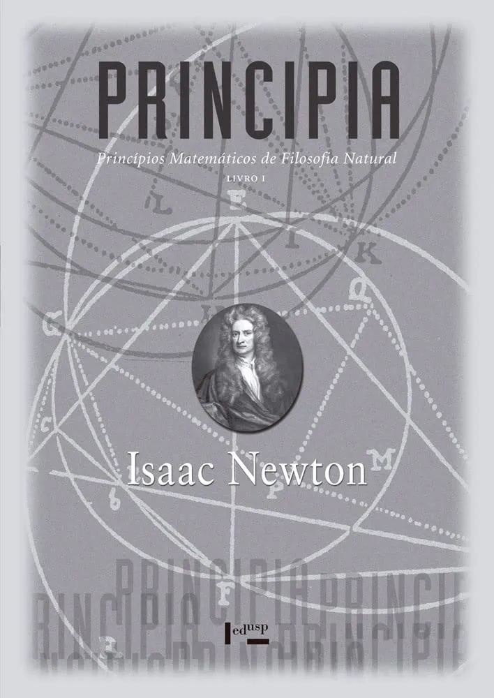

Isaac Newton
Obra fundamental da física e da matemática, na qual Isaac Newton apresenta as leis do movimento e desenvolve os princípios que serviriam de base para a mecânica clássica.

Isaac Newton
Continuação da obra de Newton, abordando o movimento em meios resistentes e a aplicação da gravitação universal à explicação dos movimentos dos corpos celestes.